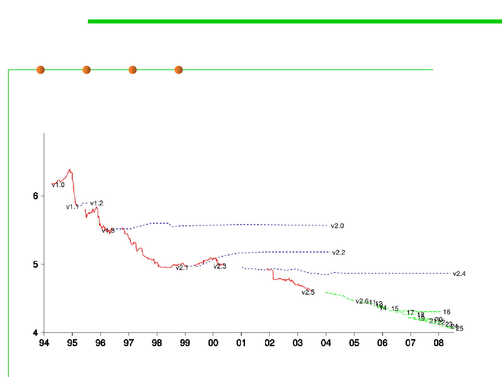

6.1 Metrics and Construction Principles for Maintainability
Avg. CC per function in Linux Kernel
Cyclomatic Complexity
the reduced average value is just a result of
having more functions with relatively
lower complexity.